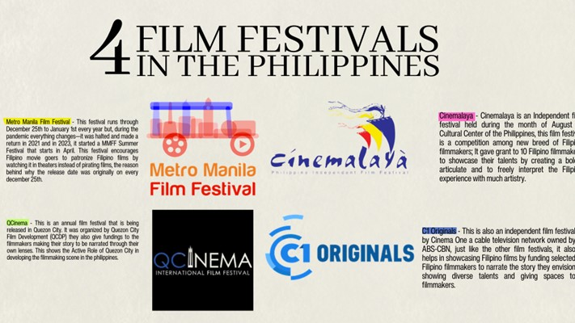

Exploring PH Arts
Film
Film is one of the staple entertainment for most Filipinos, a simple story being told behind the lens of a camera brings people together. Most of Filipino films tackle family, romantic films led by famous love teams of their generation, communities being together which shows Filipino culture.
Here, we will discuss the latest highest-grossing Filipino films and the Film Festival in the Philippines that helps promote Filipino films. We will discover how film connects people together and how it affects our economy.
Here is the list of Top 10 highest-grossing Filipino films at all-time. There are a lot of common denominators that led to the success of these film. First is the plot, most of these films centers about their family, bond of people/community, a romantic film that told struggles of a couple these scenarios are commonly happened to every Filipino household and relationship making it engaging to the Filipino.
Second is the casting, these films have well-known personalities in the Philippines who already proven their name in Show Business Industry creating trust to the people that it will be a good show same as well with the directors who will be creating the film.
Lastly, the greatest denominator is the play date of Five Films in the list are on December 25th which marks the Metro Manila Film Festival—a known film fest every December that showcases film during Christmas through New Year's where people have their Christmas bonus and Christmas presents from their relatives the reason why these films are bankable.
Filipino Film Festival celebrates the creativity of Filipino Filmmakers. This festival shows lists of films that will help the discovery of our own made films and the development of films. Here are the lists of 4 known film festivals in the Philippines:

To conclude, Film Festivals have the biggest impact on how filmmakers tell their stories and narrate Filipino stories through their own lenses. The funding given to them created jobs for the people behind the camera and in front of it.